STAL TP
Commencer par 3 semaines de chantier, suivi de 12 semaines en conduite de travaux. Gérer un chantier à plusieurs centaines de milliers d'euros dans son entiereté, en commençant par les devis, les sous-triatants... et finir par la réunion de fin de chantier avec un parking flambant neuf !
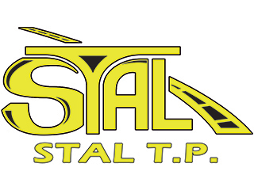
Le stage Trois semaines d'exécution, douze de conduite
STAL TP est une entreprise de travaux publics installée à Chassieu. J'y suis entré pour un stage ouvrier de trois semaines, et j'y suis resté douze de plus côté conduite de travaux.
La première partie s'est passée outil à la main, sur le terrain, à comprendre les enjeux, les façcons de faire, les délais. La seconde m'a placé de l'autre côté, à piloter le chantier de l'Intermarché de .
Missions en conduite de travaux Chantier Intermarché de Saint-Bonnet-de-Mure (69720)
- Suivi quotidien du chantier. Avancement, points d'arrêt, arbitrages sur le terrain et remontée d'informations à la hiérarchie.
- Coordination des équipes. Organisation des interventions, séquencement des tâches et gestion des aléas de planning. Gestion de la clientèle et de la circulation sur le parking.
- Gestion des devis et des sous-traitants. Consultation, comparaison des offres, suivi des commandes et vérification des prestations réalisées sur chantier.
- Suivi budgétaire. Contrôle des dépenses au regard du montant du marché. Optimisation des coûts de certaines tâches suite à des discussions avec mon maître de stage.
- Interface avec le client et les intervenants. Comptes rendus, réponses aux demandes de modification et arbitrages délai contre coût. Réunion hebdomadaire avec la maîtrise d'ouvrage ainsi que la maîtrise d'oeuvre.
- Des surprises inattendues Durant ce chantier, différents aléas sont survenus, mais le plus marquant reste les poteaux anti-béliers. Des poteaux non prévus au marché mais qui ont dûe être entièrement refaits pour des raisons de sécurité.
En images Des illustrations du chantier
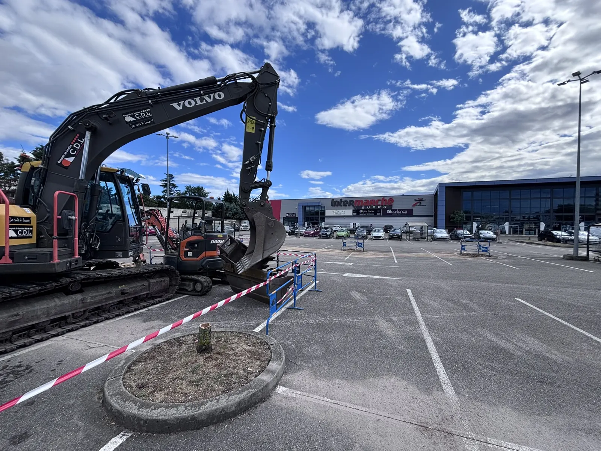
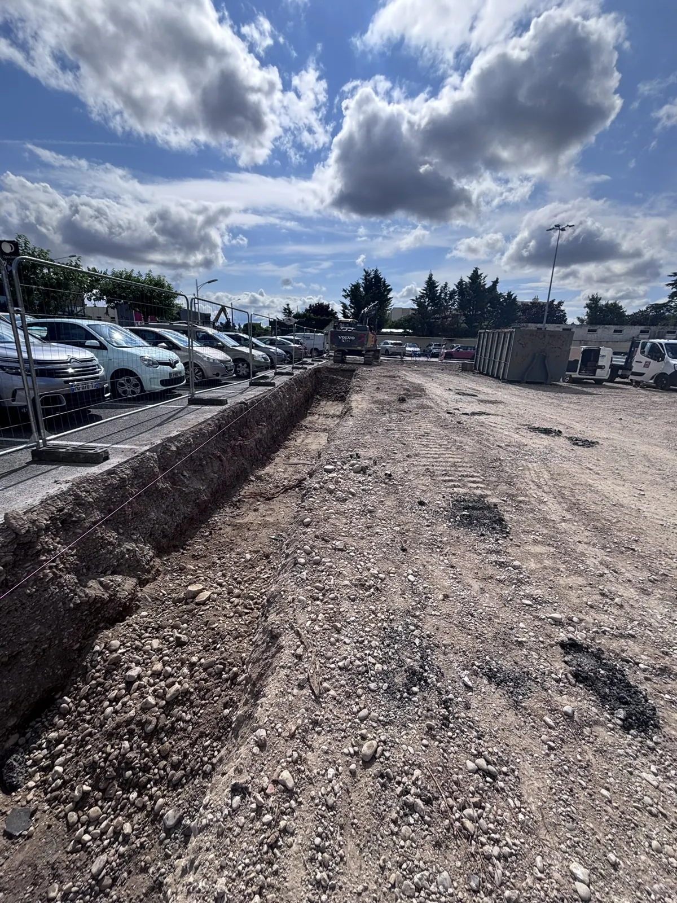
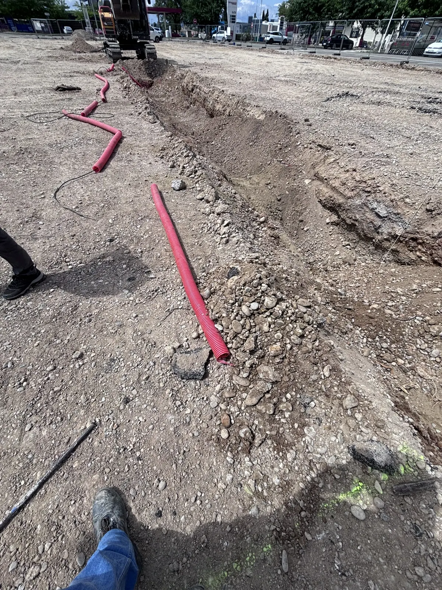
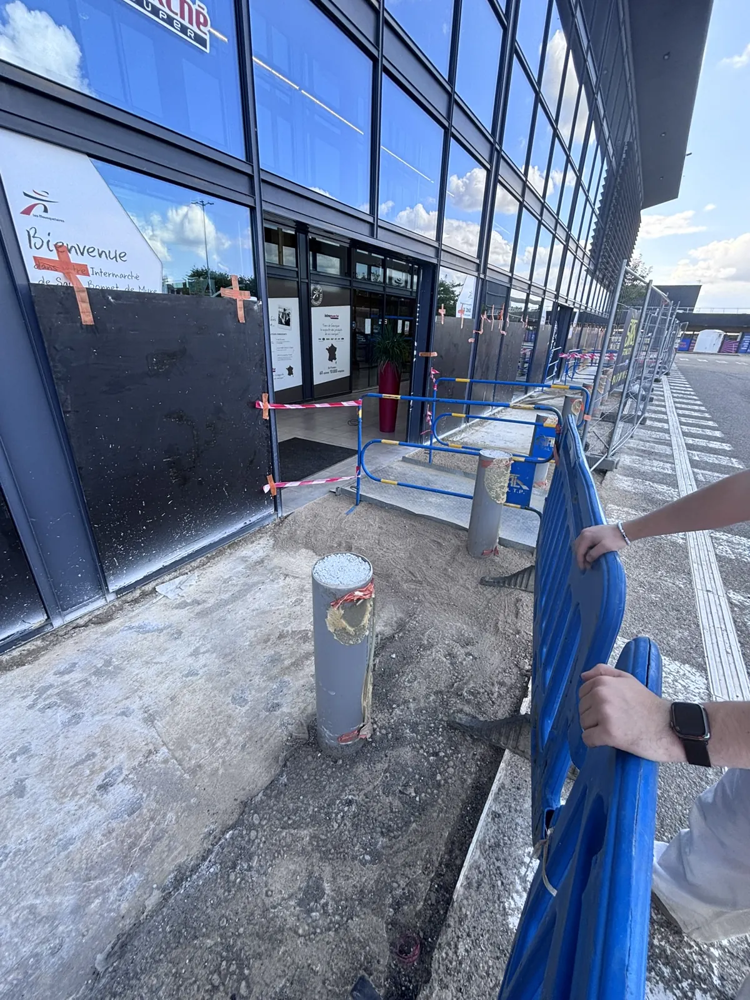
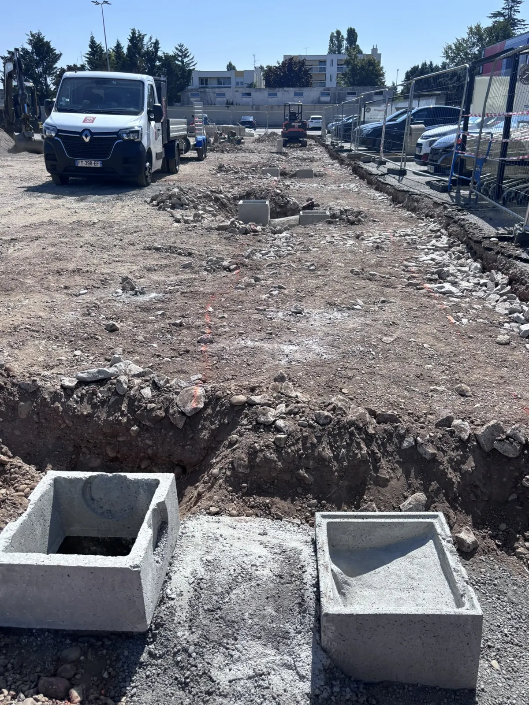
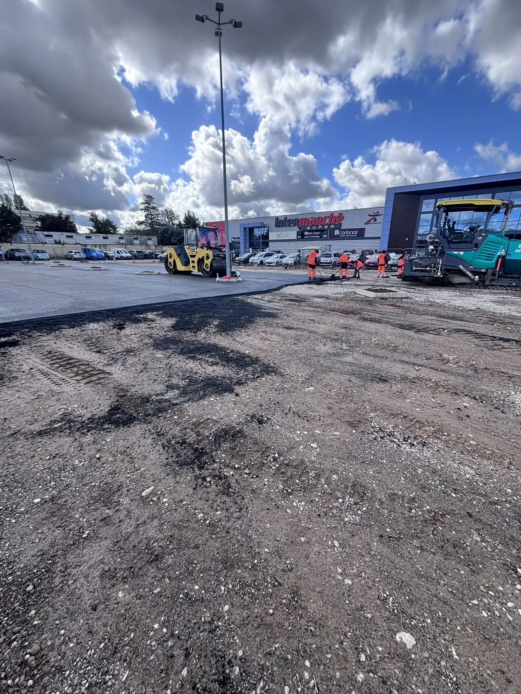
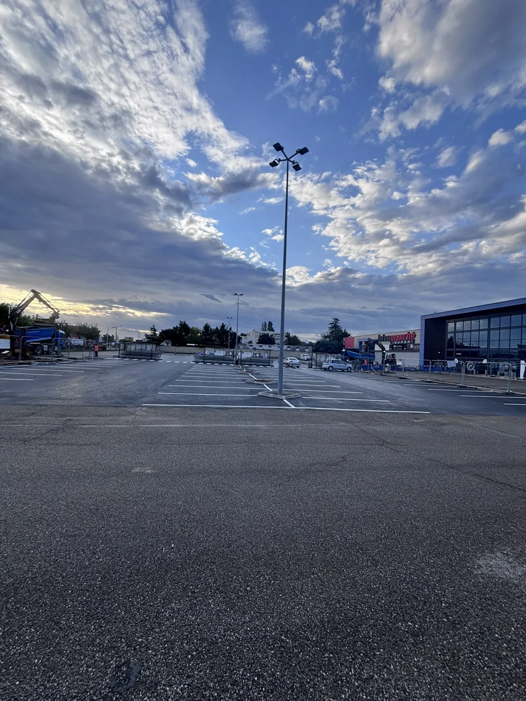
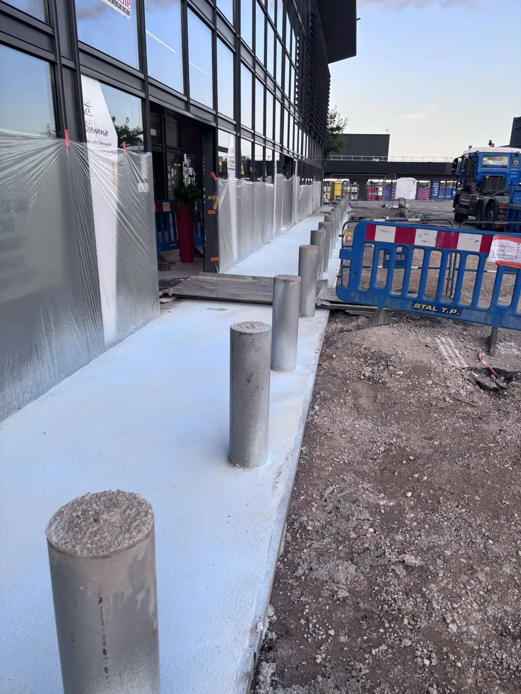
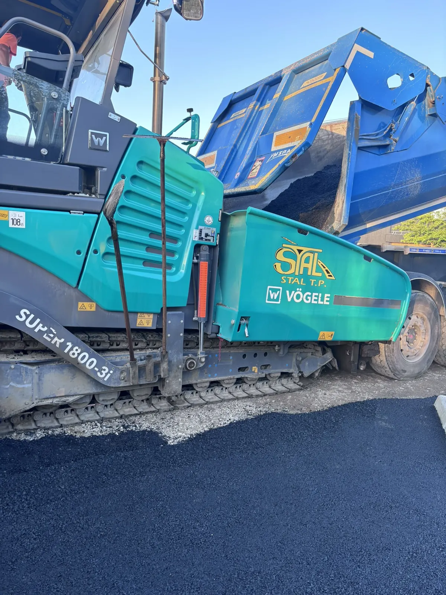
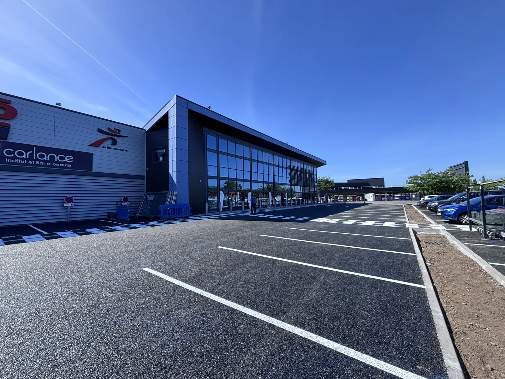
Pourquoi ça compte
Un ingénieur qui n'a jamais tenu une règle de maçon dessine des détails irréalisables. Ces quinze semaines m'ont donné les deux points de vue : celui de l'exécution et celui du pilotage. Quand je modélise aujourd'hui, je sais à quoi ressemble la mise en œuvre derrière l'objet que je place dans la maquette.
Ce que j'en retiens
On m'a confié beaucoup de responsabilités, très vite. J'ai appris à décider avec des informations incomplètes, à demander de l'aide au bon moment, et à écrire les choses pour qu'elles ne se perdent pas entre deux réunions.